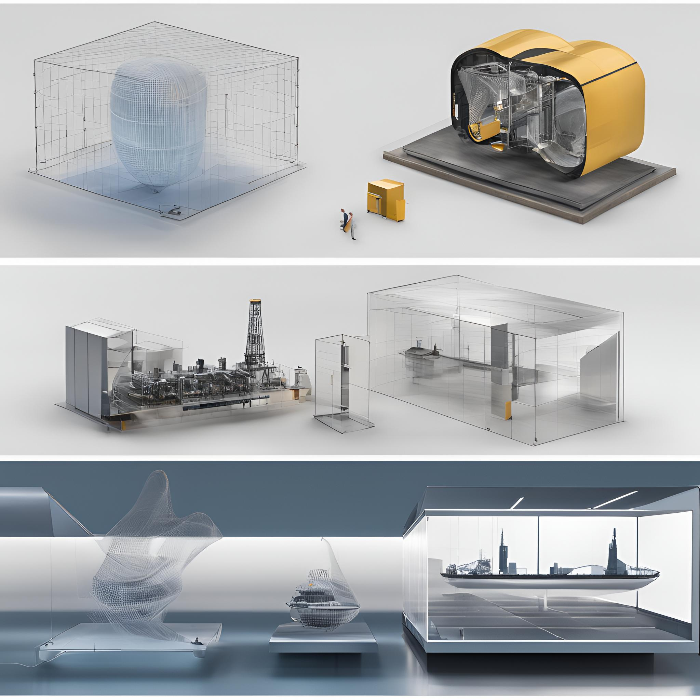
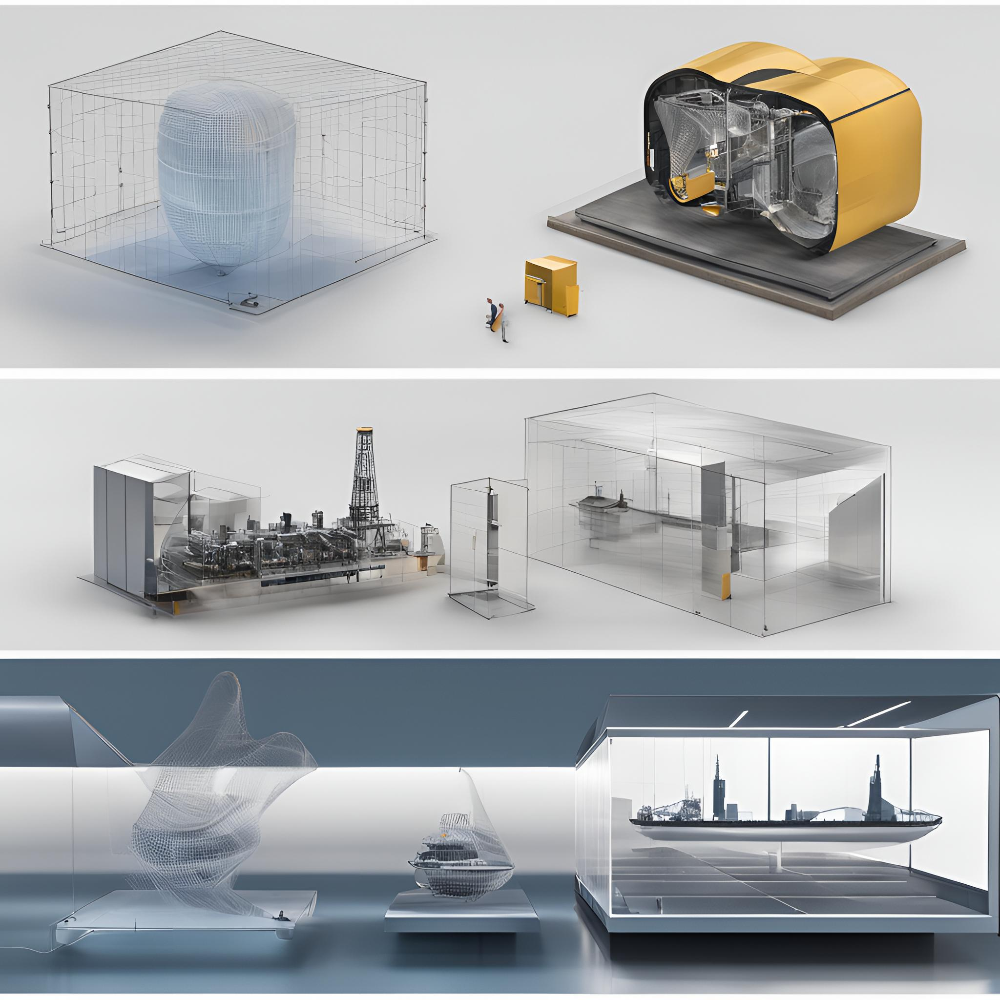

¿Para qué se utilizan los gemelos digitales?
Los gemelos digitales tienen una amplia gama de aplicaciones en diversos sectores. Algunos de los usos más comunes incluyen:
Diseño y desarrollo de productos
- Optimización de diseños: Los gemelos digitales permiten simular y probar diferentes diseños de productos antes de su fabricación, ayudando a identificar y solucionar problemas de manera temprana.
- Reducción de prototipos físicos: La simulación virtual reduce la necesidad de múltiples prototipos físicos, ahorrando tiempo y costos.
Mantenimiento predictivo
- Detección temprana de fallos: Los gemelos digitales monitorean el estado de los equipos y detectan signos de desgaste o anomalías antes de fallas graves.
- Planificación de mantenimiento: Al predecir cuándo es necesario realizar el mantenimiento, se optimizan los recursos y se reducen los tiempos de inactividad.
Optimización de procesos
- Simulación de escenarios: Los gemelos digitales permiten simular diferentes escenarios y evaluar el impacto de cambios en los procesos.
- Aumento de la eficiencia: Al analizar los datos generados, se pueden identificar áreas de mejora y optimizar los procesos.
 

Sectores que utilizan gemelos digitales
Los gemelos digitales se están utilizando en una amplia variedad de sectores, incluyendo:
- Manufactura: Optimización de procesos de producción, diseño de productos, mantenimiento predictivo.
- Energía: Gestión de redes eléctricas, optimización de la producción de energía, mantenimiento de turbinas eólicas.
- Automotriz: Diseño de vehículos, simulación de pruebas de choque, mantenimiento predictivo.
- Aeronáutica: Diseño de aviones, simulación de vuelos, mantenimiento predictivo.
- Construcción: Diseño de edificios, simulación de procesos constructivos, gestión de instalaciones.
- Salud: Diseño de dispositivos médicos, simulación de cirugías, gestión de hospitales.